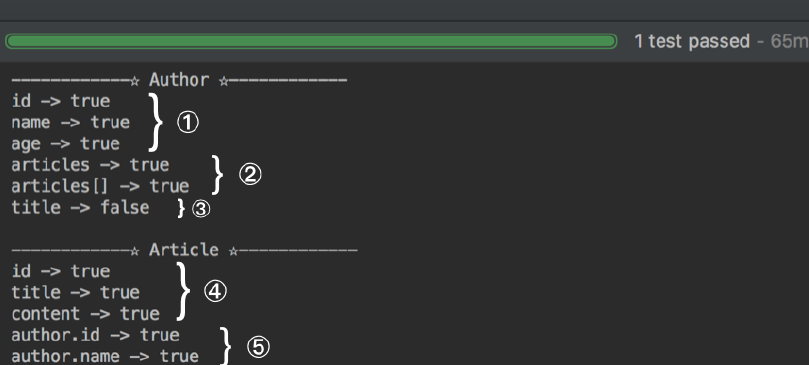
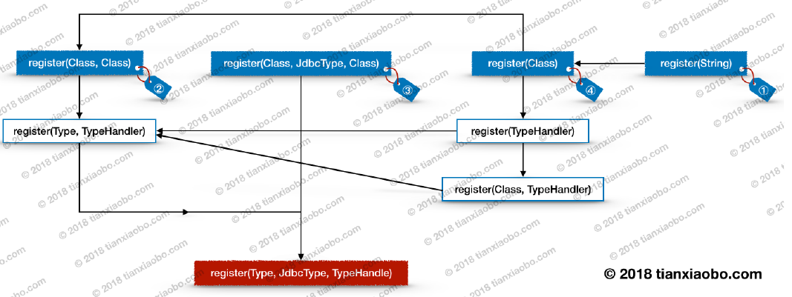

我们在使用 MyBatis 框架时,通常会进行一定的设置,使其能更好的满足我们的需求。对于一个框架来说,提供较为丰富的配置文件,也是其灵活性的体现。本章将会介绍 MyBatis 配置文件中的大部分节点解析过程,包含但不限于 properties、settings、typeAliase、typeHandlers 等.
配置文件解析过程分析
我们在使用 MyBatis 时,第一步要做的事情一般是根据配置文件构建 SqlSessionFactory对象。相关代码大致如下:
String resource = "mybatis-config.xml";
InputStream inputStream = Resources.getResourceAsStream(resource);
SqlSessionFactory sqlSessionFactory =
new SqlSessionFactoryBuilder().build(inputStream);
在上面代码中,我们首先会使用 MyBatis 提供的工具类 Resources 加载配置文件,得到一个输入流。然后再通过 SqlSessionFactoryBuilder 对象的 build 方法构建SqlSessionFactory对象。这里的 build 方法是我们分析配置文件解析过程的入口方法。下面我们来看一下这个方法的代码:
// -☆- SqlSessionFactoryBuilder
public SqlSessionFactory build(InputStream inputStream) {
// 调用重载方法
return build(inputStream, null, null);
}
public SqlSessionFactory build(InputStream inputStream, String environment,
Properties properties) {
try {
// 创建配置文件解析器
XMLConfigBuilder parser =
new XMLConfigBuilder(inputStream, environment, properties);
// 调用 parse 方法解析配置文件,生成 Configuration 对象
return build(parser.parse());
} catch (Exception e) {
throw ExceptionFactory.wrapException("......", e);
} finally {
ErrorContext.instance().reset();
try {
inputStream.close();
} catch (IOException e) {......}
}
}
public SqlSessionFactory build(Configuration config) {
// 创建 DefaultSqlSessionFactory
return new DefaultSqlSessionFactory(config);
}
从上面的代码中,我们大致可以猜出 MyBatis 配置文件是通过 XMLConfigBuilder 进行解析的。不过目前这里还没有非常明确的解析逻辑,所以我们继续往下看。这次来看一下XMLConfigBuilder 的 parse 方法,如下:
// -☆- XMLConfigBuilder
public Configuration parse() {
if (parsed) {
throw new BuilderException("......");
}
parsed = true;
// 解析配置
parseConfiguration(parser.evalNode("/configuration"));
return configuration;
}
到这里大家可以看到一些端倪了,注意一个 xpath 表达式—— /configuration。这个表达式代表的是 MyBatis 配置文件的 <configuration> 节点,这里通过 xpath 选中这个节点,并传递给 parseConfiguration 方法。我们继续跟下去。
private void parseConfiguration(XNode root) {
try {
// 解析 properties 配置
propertiesElement(root.evalNode("properties"));
// 解析 settings 配置,并将其转换为 Properties 对象
Properties settings =
settingsAsProperties(root.evalNode("settings"));
// 加载 vfs
loadCustomVfs(settings);
// 解析 typeAliases 配置
typeAliasesElement(root.evalNode("typeAliases"));
atch// 解析 plugins 配置
pluginElement(root.evalNode("plugins"));
// 解析 objectFactory 配置
objectFactoryElement(root.evalNode("objectFactory"));
// 解析 objectWrapperFactory 配置
objectWrapperFactoryElement(root.evalNode("objectWrapperFactory"));
// 解析 reflectorFactory 配置
reflectorFactoryElement(root.evalNode("reflectorFactory"));
// settings 中的信息设置到 Configuration 对象中
settingsElement(settings);
// 解析 environments 配置
environmentsElement(root.evalNode("environments"));
// 解析 databaseIdProvider,获取并设置 databaseId 到 Configuration 对象
databaseIdProviderElement(root.evalNode("databaseIdProvider"));
// 解析 typeHandlers 配置
typeHandlerElement(root.evalNode("typeHandlers"));
// 解析 mappers 配置
mapperElement(root.evalNode("mappers"));
}catch(Exception e){
throw new BuilderException("...");
}
}
到此,一个完整的配置解析过程就呈现出来了,每个节点的的解析逻辑均封装在了相应的方法中。我在分析这些方法时,并不会按照上面代码中所呈现的解析顺序进行分析,而是做了一定的调整。
解析<properties>节点
<properties>节点的解析工作由 propertiesElement 这个方法完成的,在分析方法的源码前,我们先来看一下<properties>节点是如何配置的。如下:
<properties resource="jdbc.properties">
<property name="jdbc.username" value="coolblog"/>
<property name="hello" value="world"/>
</properties>
上面配置包含了一个 resource 属性,和两个子节点。接下面,我们参照上面的配置,来分析 propertiesElement 方法的逻辑。如下:
// -☆- XMLConfigBuilder
private void propertiesElement(XNode context) throws Exception {
if (context != null) {
// 解析 propertis 的子节点,并将这些节点内容转换为属性对象 Properties
Properties defaults = context.getChildrenAsProperties();
// 获取 propertis 节点中的 resource 和 url 属性值
String resource = context.getStringAttribute("resource");
String url = context.getStringAttribute("url");
// 两者都不用空,则抛出异常
if (resource != null && url != null) {
throw new BuilderException("...");
}
if (resource != null) {
// 从文件系统中加载并解析属性文件
defaults.putAll(Resources.getResourceAsProperties(resource));
} else if (url != null) {
// 通过 url 加载并解析属性文件
defaults.putAll(Resources.getUrlAsProperties(url));
}
Properties vars = configuration.getVariables();
if (vars != null) {
defaults.putAll(vars);
}
parser.setVariables(defaults);
// 将属性值设置到 configuration 中
configuration.setVariables(defaults);
}
}
跟进一下getChildrenAsProperties 有：
public Properties getChildrenAsProperties() {
Properties properties = new Properties();
// 获取并遍历子节点
for (XNode child : getChildren()) {
// 获取 property 节点的 name 和 value 属性
String name = child.getStringAttribute("name");
String value = child.getStringAttribute("value");
if (name != null && value != null) {
// 设置属性到属性对象中
properties.setProperty(name, value);
}
}
return properties;
}
getChildren再跟进：
// -☆- XNode
public List<XNode> getChildren() {
List<XNode> children = new ArrayList<XNode>();
// 获取子节点列表
NodeList nodeList = node.getChildNodes();
if (nodeList != null) {
for (int i = 0, n = nodeList.getLength(); i < n; i++) {
Node node = nodeList.item(i);
if (node.getNodeType() == Node.ELEMENT_NODE) {
// 将节点对象封装到 XNode 中,并将 XNode 对象放入 children 列表中
children.add(new XNode(xpathParser, node, variables));
}
}
}
return children;
}
上面就是<properties>节点解析过程,不是很复杂。主要包含三个步骤,一是解析<properties>节点的子节点,并将解析结果设置到 Properties 对象中。二是从文件系统或通过网络读取属性配置,这取决于<properties>节点的 resource 和 url 是否为空。第二步对应的代码比较简单,这里就不分析了。最后一步则是将包含属性信息的Properties 对象设置到XPathParser 和 Configuration 中。
需要注意的是,propertiesElement 方法是先解析<properties>节点的子节点内容,然后再从文件系统或者网络读取属性配置, 并将所有的属性及属性值都放入到 defaults 属性对象中。
这会导致同名属性覆盖的问题,也就是从文件系统,或者网络上读取到的属性和属性值会覆盖掉<properties>子节点中同名的属性和及值。
解析<settings>节点
<settings>相关配置是 MyBatis 中非常重要的配置,这些配置用于调整 MyBatis 运行时的行为。settings 配置繁多,在对这些配置不熟悉的情况下,保持默认配置即可。关于<settings>相关配置,MyBatis 官网上进行了比较详细的描述,大家可以去了解一下。在本节中,暂时还用不到这些配置,所以即使不了解这些配置也没什么关系。下面先来看一个比较简单的配置,如下:
<settings>
<setting name="cacheEnabled" value="true"/>
<setting name="lazyLoadingEnabled" value="true"/>
<setting name="autoMappingBehavior" value="PARTIAL"/>
</settings>
接下来,对照上面的配置,来分析相关源码:
// -☆- XMLConfigBuilder
private Properties settingsAsProperties(XNode context) {
if (context == null) {
return new Properties();
}
// 获取 settings 子节点中的内容
Properties props = context.getChildrenAsProperties();
// 创建 Configuration 类的“元信息”对象
MetaClass metaConfig = MetaClass.forClass(
Configuration.class, localReflectorFactory);
for (Object key : props.keySet()) {
// 检测 Configuration 中是否存在相关属性,不存在则抛出异常
if (!metaConfig.hasSetter(String.valueOf(key))) {
throw new BuilderException("......");
}
}
return props;
}
如上,settingsAsProperties 方法看起来并不复杂,不过这是一个假象。在上面的代码中出现了一个陌生的类 MetaClass,这个类是用来做什么的呢?答案是用来解析目标类的一些元信息,比如类的成员变量,getter/setter 方法等。关于这个类的逻辑,待会我会详细解析。
接下来,简单总结一下上面代码的逻辑。
- 解析
settings子节点的内容,并将解析结果转成Properties对象 - 为
Configuration创建元信息对象 - 通过
MetaClass检测Configuration中是否存在某个属性的 setter 方法,不存在则抛异常 - 若通过
MetaClass的检测,则返回Properties对象,方法逻辑结束
下面,我们重点关注一下第 2 步和第 3 步的流程。这两步流程对应的代码较为复杂,需要一点耐心阅读。
元信息对象创建过程
元信息类 MetaClass 的构造方法为私有类型,所以不能直接创建,但是它有个public方法forClass，必须使用其提供的forClass 方法进行创建。它的创建逻辑如下:
public class MetaClass {
private final ReflectorFactory reflectorFactory;
private final Reflector reflector;
private MetaClass(Class<?> type, ReflectorFactory reflectorFactory) {
this.reflectorFactory = reflectorFactory;
// 根据类型创建 Reflector
this.reflector = reflectorFactory.findForClass(type);
}
public static MetaClass forClass(
Class<?> type, ReflectorFactory reflectorFactory) {
// 调用构造方法
return new MetaClass(type, reflectorFactory);
}
}
// 省略其他方法
上 面的代 码看起 来很简单,不过 这只是冰山一 角。上 面代码出现了两个新的类ReflectorFactory 和 Reflector,MetaClass 通过引入这些新类帮助它完成功能。下面我们看一下 hasSetter 方法的源码就知道是怎么回事了。
// -☆- MetaClass
public boolean hasSetter(String name) {
// 属性分词器,用于解析属性名
PropertyTokenizer prop = new PropertyTokenizer(name);
// hasNext 返回 true,则表明 name 是一个复合属性,后面会进行分析
if (prop.hasNext()) {
// 调用 reflector 的 hasSetter 方法
if (reflector.hasSetter(prop.getName())) {
// 为属性创建创建 MetaClass
MetaClass metaProp = metaClassForProperty(prop.getName());
// 再次调用 hasSetter
return metaProp.hasSetter(prop.getChildren());
} else {
return false;
}
} else {
// 调用 reflector 的 hasSetter 方法
return reflector.hasSetter(prop.getName());
}
}
从上面的代码中,我们可以看出 MetaClass 中的 hasSetter 方法最终调用了 Reflector 的hasSetter 方法。关于 Reflector 的 hasSetter 方法,这里先不进行分析,Reflector 这个类的逻辑较为复杂,本节会在随后进行详细说明。下面来简单介绍一下上面代码中出现的几个类:
ReflectorFactory:顾名思义,Reflector的工厂类,兼有缓存Reflector对象的功能Reflector:反射器,用于解析和存储目标类中的元信息PropertyTokenizer:属性名分词器,用于处理较为复杂的属性名
上面的描述比较简单,仅通过上面的描述还不能让大家对这几个类有更深入的理解。所以下面单独分析一下这几个类的逻辑,首先是 ReflectorFactory。 ReflectorFactory 是一个接口,MyBatis 中目前只有一个实现类 DefaultReflectorFactory,它的分析如下:
DefaultReflectorFactory
DefaultReflectorFactory 用于创建 Reflector,同时兼有缓存的功能,它的源码如下:
public class DefaultReflectorFactory implements ReflectorFactory {
private boolean classCacheEnabled = true;
/** 目标类和反射器映射缓存 */
private final ConcurrentMap<Class<?>, Reflector> reflectorMap =
new ConcurrentHashMap<Class<?>, Reflector>();
// 省略部分代码
@Override
public Reflector findForClass(Class<?> type) {
// classCacheEnabled 默认为 true
if (classCacheEnabled) {
// 从缓存中获取 Reflector 对象
Reflector cached = reflectorMap.get(type);
// 缓存为空,则创建一个新的 Reflector 实例,并放入缓存中
if (cached == null) {
cached = new Reflector(type);
// 将 <type, cached> 映射缓存到 map 中,方便下次取用
reflectorMap.put(type, cached);
}
return cached;
} else {
// 创建一个新的 Reflector 实例
return new Reflector(type);
}
}
}
如上,DefaultReflectorFactory 的 findForClass 方法逻辑包含两个访存操作,和一个对象创建操作。逻辑不是很复杂,代码注释的比较详细了,就不多说了。
Reflector
Reflector 这个类的用途主要是是通过反射获取目标类的 getter 方法及其返回值类型,setter 方法及其参数值类型等元信息。并将获取到的元信息缓存到相应的集合中,供后续使用。 Reflector 本身代码比较多,这里不能一一分析。我将会分析该类的部分逻辑,分别如下:
- Reflector 构造方法及成员变量分析
- getter 方法解析过程
- setter 方法解析过程
下面我们按照上面的顺序进行分析,先来分析 Reflector 的构造方法。
Reflector 构造方法及成员变量分析
Reflector 构造方法中包含了很多初始化逻辑,目标类的元信息解析过程也是在构造方法中完成的,这些元信息最终会被保存到 Reflector 的成员变量中。下面我们先来看看 Reflector的构造方法和相关的成员变量定义,如下:
public class Reflector {
private final Class<?> type;
private final String[] readablePropertyNames;
private final String[] writeablePropertyNames;
private final Map<String, Invoker> setMethods =
new HashMap<String, Invoker>();
private final Map<String, Invoker> getMethods =
new HashMap<String, Invoker>();
private final Map<String, Class<?>> setTypes =
new HashMap<String, Class<?>>();
private final Map<String, Class<?>> getTypes =
new HashMap<String, Class<?>>();
private Constructor<?> defaultConstructor;
private Map<String, String> caseInsensitivePropertyMap =
new HashMap<String, String>();
public Reflector(Class<?> clazz) {
type = clazz;
// 解析目标类的默认构造方法,并赋值给 defaultConstructor 变量
addDefaultConstructor(clazz);
// 解析 getter 方法,并将解析结果放入 getMethods 中
addGetMethods(clazz);
// 解析 setter 方法,并将解析结果放入 setMethods 中
addSetMethods(clazz);
// 解析属性字段,并将解析结果添加到 setMethods 或 getMethods 中
addFields(clazz);
// 从 getMethods 映射中获取可读属性名数组
readablePropertyNames = getMethods.keySet()
.toArray(new String[getMethods.keySet().size()]);
// 从 setMethods 映射中获取可写属性名数组
writeablePropertyNames = setMethods.keySet()
.toArray(new String[setMethods.keySet().size()]);
// 将所有属性名的大写形式作为键,属性名作为值,
// 存入到 caseInsensitivePropertyMap 中
for (String propName : readablePropertyNames) {
caseInsensitivePropertyMap.put(propName.toUpperCase(Locale.ENGLISH), propName);
}
for (String propName : writeablePropertyNames) {
caseInsensitivePropertyMap.put(propName.toUpperCase(Locale.ENGLISH), propName);
}
}
// 省略其他方法
}
如上,Reflector 的构造方法逻辑比较多,看起来比较复杂。不过好在一些较为复杂的逻辑都封装在了相应的方法中,这样整体的逻辑就比较清晰了。Reflector 构造方法所做的事情均已进行了注释,大家对照着注释先看一下。构造方法中所调用的其他方法的细节待会会进行分析。下面使用表格列举一下 Reflector 部分成员变量的用途。如下:
| 变量名 | 用途 |
|---|---|
readablePropertyNames |
可读属性名称数组,用于保存 getter 方法对应的属性名称 |
writeablePropertyNames |
可写属性名称数组,用于保存 setter 方法对应的属性名称 |
setMethods |
用于保存属性名称到 Invoke 的映射。setter 方法会被封装到 MethodInvoker 对象中,Invoke 实现类比较简单,大家自行分析 |
getMethods |
用于保存属性名称到 Invoke 的映射。同上,getter 方法也会被封装到 MethodInvoker 对象中 |
setTypes |
用于保存 setter 对应的属性名与参数类型的映射 |
getTypes |
用于保存 getter 对应的属性名与返回值类型的映射 |
caseInsensitivePropertyMap |
用于保存大写属性名与属性名之间的映射,比如 <NAME,name> |
上面列举了一些集合变量,这些变量用于缓存各种原信息。关于这些变量,这里描述的不太好懂,主要是这些变量用途不太好解释。要想了解这些变量更多的细节,还是要深入到源码才行。所以我们成热打铁,继续往下分析。
getter 方法解析过程
getter 方法解析的逻辑被封装在了 addGetMethods 方法中,这个方法除了会解析形如getXXX 的方法,同时也会解析 isXXX 方法。该方法的源码分析如下:
private void addGetMethods(Class<?> cls) {
Map<String, List<Method>> conflictingGetters =
new HashMap<String, List<Method>>();
// 获取当前类,接口,以及父类中的方法。该方法逻辑不是很复杂,这里就不展开了
Method[] methods = getClassMethods(cls);
for (Method method : methods) {
// getter 方法不应该有参数,若存在参数,则忽略当前方法
if (method.getParameterTypes().length > 0) {
continue;
}
String name = method.getName();
// 过滤出以 get 或 is 开头的方法
if ((name.startsWith("get") && name.length() > 3)
|| (name.startsWith("is") && name.length() > 2)) {
// 将 getXXX 或 isXXX 等方法名转成相应的属性,比如 getName -> name
name = PropertyNamer.methodToProperty(name);
/*
* 将冲突的方法添加到 conflictingGetters 中。考虑这样一种情况:
*
* getTitle 和 isTitle 两个方法经过 methodToProperty 处理,
* 均得到 name = title,这会导致冲突。
*
* 对于冲突的方法,这里先统一起存起来,后续再解决冲突
*/
addMethodConflict(conflictingGetters, name, method);
}
}
// 解决 getter 冲突
resolveGetterConflicts(conflictingGetters);
}
addGetMethods 方法的代码不是很多,但是逻辑有点多。这里总结一下:
- 获取当前类,接口,以及父类中的方法
- 遍历上一步获取的方法数组,并过滤出以 get 和 is 开头的方法
- 将方法名转换成相应的属性名
- 将属性名和方法对象添加到冲突集合中
- 解决冲突
在上面的执行流程中,前三步比较简单,大家自行分析吧。第 4 步也不复杂,下面我会把源码贴出来,大家看一下就能懂。在这几步中,第 5 步逻辑比较复杂,这一步逻辑我们重点关注一下。
/* Reflector
/**
* // 添加属性名和方法对象到冲突集合中
* @param conflictingMethods
* @param name
* @param method
*/
private void addMethodConflict(Map<String, List<Method>> conflictingMethods, String name, Method method) {
List<Method> list = conflictingMethods.get(name);
if (list == null) {
list = new ArrayList<Method>();
conflictingMethods.put(name, list);
}
list.add(method);
}
/**
* 解决冲突
* @param conflictingGetters
*/
private void resolveGetterConflicts(Map<String, List<Method>> conflictingGetters) {
for (String propName : conflictingGetters.keySet()) {
List<Method> getters = conflictingGetters.get(propName);
Iterator<Method> iterator = getters.iterator();
Method firstMethod = iterator.next();
if (getters.size() == 1) {
addGetMethod(propName, firstMethod);
} else {
Method getter = firstMethod;
// 获取返回值类型
Class<?> getterType = firstMethod.getReturnType();
while (iterator.hasNext()) {
Method method = iterator.next();
Class<?> methodType = method.getReturnType();
/**
* 两个方法的返回值类型一致，若两个方法返回值类型均为boolean,则选取isXXX方法
* 为getterType,则无法决定哪个方法更为合适，只能抛出异常
*
* */
if (methodType.equals(getterType)) {
throw new ReflectionException("Illegal overloaded getter method with ambiguous type for property " + propName + " in class " +firstMethod.getDeclaringClass()
+ ". This breaks the JavaBeans " + "specification and can cause unpredicatble results.");
/**
* getterType是methodType的子类，类型上更为具体
* 则认为当前的getter 是合适的，无需做什么事情
*
* */
} else if (methodType.isAssignableFrom(getterType)) {
// OK getter type is descendant
/**
* methodType 是getterType的子类，此时认为method方法更为合适，
* 故将getter更新为method
*/
} else if (getterType.isAssignableFrom(methodType)) {
getter = method;
getterType = methodType;
} else {
throw new ReflectionException("Illegal overloaded getter method with ambiguous type for property " + propName + " in class " +firstMethod.getDeclaringClass()+ ". This breaks the JavaBeans " + "specification and can cause unpredicatble results.");
}
}
// 将筛选出的方法添加到getMethods中，并将方法返回值添加到getType中
addGetMethod(propName, getter);
}
}
}
private void addGetMethod(String name, Method method) {
if (isValidPropertyName(name)) {
// 解析返回值类型
getMethods.put(name, new MethodInvoker(method));
// 将返回值类型由Type 转为Class,并将转换后的结果缓存到getTypes中
getTypes.put(name, method.getReturnType());
}
}
以上就是解除冲突的过程,代码有点长,不太容易看懂。这里大家只要记住解决冲突的规则即可理解上面代码的逻辑。相关规则如下:
- 冲突方法返回值类型具有继承关系,子类返回值对应方法被认为是更合适的选择
- 冲突方法的返回值类型相同,如果返回值类型为 boolean,那么以 is 开头的方法则是更合适的选择
- 冲突方法的返回值类型相同,但类型非 boolean,此时出现歧义,抛出异常
- 冲突方法的返回值类型不相关,无法确定哪个是更好的选择,此时直接抛异常
分析完 getter 方法的解析过程,下面继续分析 setter 方法的解析过程。
setter 方法解析过程
与 getter 方法解析过程相比, setter 方法的解析过程与此有一定的区别。主要体现在冲突出现的原因,以及冲突的解决方法上。下面,我们深入源码来找出两者之间的区别。
private void addSetMethods(Class<?> cls) {
Map<String, List<Method>> conflictingSetters =
new HashMap<String, List<Method>>();
// 获取当前类,接口,以及父类中的方法。该方法逻辑不是很复杂,这里就不展开了
Method[] methods = getClassMethods(cls);
for (Method method : methods) {
String name = method.getName();
// 过滤出 setter 方法,且方法仅有一个参数
if (name.startsWith("set") && name.length() > 3) {
if (method.getParameterTypes().length == 1) {
name = PropertyNamer.methodToProperty(name);
// setter 方法发生冲突原因是:可能存在重载情况,比如:
//
void setSex(int sex);
//
void setSex(SexEnum sex);
addMethodConflict(conflictingSetters, name, method);
}
}
}
// 解决 setter 冲突
resolveSetterConflicts(conflictingSetters);
}
从上面的代码和注释中,我们可知道 setter 方法之间出现冲突的原因。 即方法存在重载,方法重载导致 methodToProperty 方法解析出的属性名完全一致。而 getter 方法之间出现冲突的原因是 getXXX 和 isXXX 对应的属性名一致。既然冲突发生了,要进行调停,那接下来继续来看看调停冲突的逻辑。
private void resolveSetterConflicts(
Map<String, List<Method>> conflictingSetters) {
for (String propName : conflictingSetters.keySet()) {
List<Method> setters = conflictingSetters.get(propName);
/*
* 获取 getter 方法的返回值类型,由于 getter 方法不存在重载的情况,
* 所以可以用它的返回值类型反推哪个 setter 的更为合适
*/
Class<?> getterType = getTypes.get(propName);
Method match = null;
ReflectionException exception = null;
for (Method setter : setters) {
// 获取参数类型
Class<?> paramType = setter.getParameterTypes()[0];
if (paramType.equals(getterType)) {
// 参数类型和返回类型一致,则认为是最好的选择,并结束循环
match = setter;
break;
}
if (exception == null) {
try {
// 选择一个更为合适的方法
match = pickBetterSetter(match, setter, propName);
} catch (ReflectionException e) {
match = null;
exception = e;
}
}
}
// 若 match 为空,表示没找到更为合适的方法,此时抛出异常
if (match == null) {
throw exception;
} else {
// 将筛选出的方法放入 setMethods 中,并将方法参数值添加到 setTypes 中
addSetMethod(propName, match);
}
}
}
/** 从两个 setter 方法中选择一个更为合适方法 */
private Method pickBetterSetter(Method setter1,
Method setter2, String property) {
if (setter1 == null) {
return setter2;
}
Class<?> paramType1 = setter1.getParameterTypes()[0];
Class<?> paramType2 = setter2.getParameterTypes()[0];
// 如果参数 2 可赋值给参数 1,即参数 2 是参数 1 的子类,
// 则认为参数 2 对应的 setter 方法更为合适
if (paramType1.isAssignableFrom(paramType2)) {
return setter2;
// 这里和上面情况相反
} else if (paramType2.isAssignableFrom(paramType1)) {
return setter1;
}
// 两种参数类型不相关,这里抛出异常
throw new ReflectionException("......");
}
private void addSetMethod(String name, Method method) {
if (isValidPropertyName(name)) {
setMethods.put(name, new MethodInvoker(method));
// 解析参数类型列表
Type[] paramTypes = TypeParameterResolver
.resolveParamTypes(method, type);
// 将参数类型由 Type 转为 Class,并将转换后的结果缓存到 setTypes
setTypes.put(name, typeToClass(paramTypes[0]));
}
}
关于 setter 方法冲突的解析规则,这里也总结一下吧。如下:
- 冲突方法的参数类型与 getter 的返回类型一致,则认为是最好的选择
- 冲突方法的参数类型具有继承关系,子类参数对应的方法被认为是更合适的选择
- 冲突方法的参数类型不相关,无法确定哪个是更好的选择,此时直接抛异常
到此关于 setter 方法的解析过程就说完了。我在前面说过 MetaClass 的 hasSetter 最终调用了 Refactor 的 hasSetter 方法,那么现在是时候分析 Refactor 的 hasSetter 方法了。代码如下如下:
public boolean hasSetter(String propertyName) {
return setMethods.keySet().contains(propertyName);
}
PropertyTokenizer
对于较为复杂的属性,需要进行进一步解析才能使用。那什么样的属性是复杂属性呢?
来看个测试代码就知道了。
public class MetaClassTest {
private class Author {
private Integer id;
private String name;
private Integer age;
/** 一个作者对应多篇文章 */
private Article[] articles;
}
// 省略 getter/setter
private class Article {
private Integer id;
private String title;
private String content;
/** 一篇文章对应一个作者 */
private Author author;
}
// 省略 getter/setter
@Test
public void testHasSetter() {
// 为 Author 创建元信息对象
MetaClass authorMeta = MetaClass.forClass(
Author.class, new DefaultReflectorFactory());
System.out.println("------------☆ Author ☆------------");
System.out.println("id -> " + authorMeta.hasSetter("id"));
System.out.println("name -> " + authorMeta.hasSetter("name"));
System.out.println("age -> " + authorMeta.hasSetter("age"));
// 检测 Author 中是否包含 Article[] 的 setter
System.out.println("articles->" + authorMeta.hasSetter("articles"));
System.out.println("articles[] -> " +
authorMeta.hasSetter("articles[]"));
System.out.println("title -> " + authorMeta.hasSetter("title"));
// 为 Article 创建元信息对象
MetaClass articleMeta = MetaClass.forClass(
Article.class, new DefaultReflectorFactory());
System.out.println("\n------------☆ Article ☆------------");
System.out.println("id -> " + articleMeta.hasSetter("id"));
System.out.println("title -> " + articleMeta.hasSetter("title"));
System.out.println("content -> " +
articleMeta.hasSetter("content"));
// 下面两个均为复杂属性,分别检测 Article 类中的 Author 类
// 是否包含 id 和 name 的 setter 方法
System.out.println("author.id->"+
articleMeta.hasSetter("author.id"));
System.out.println("author.name->" +
articleMeta.hasSetter("author.name"));
}
}
如上,Article 类中包含了一个 Author 引用。然后我们调用 articleMeta 的 hasSetter 检测author.id 和 author.name 属性是否存在,我们的期望结果为 true。测试结果如下:

如上,标记5处的输出均为 true,我们的预期达到了。标记2处检测 Article 数组的是否存在 setter 方法,结果也均为 true。这说明 PropertyTokenizer 对数组和复合属性均进行了处理。那它是如何处理的呢?答案如下:
public class PropertyTokenizer implements Iterator<PropertyTokenizer> {
private String name;
private final String indexedName;
private String index;
private final String children;
public PropertyTokenizer(String fullname) {
// 检测传入的参数中是否包含字符 '.'
int delim = fullname.indexOf('.');
if (delim > -1) {
/*
* 以点位为界,进行分割。比如:
*
fullname = www.coolblog.xyz
*
* 以第一个点为分界符:
*
name = www
*
children = coolblog.xyz
*/
name = fullname.substring(0, delim);
children = fullname.substring(delim + 1);
} else {
// fullname 中不存在字符 '.'
name = fullname;
children = null;
}
indexedName = name;
// 检测传入的参数中是否包含字符 '['
delim = name.indexOf('[');
if (delim > -1) {
/*
* 获取中括号里的内容,比如:
1. 对于数组或 List 集合:[] 中的内容为数组下标,
比如 fullname = articles[1],index = 1
2. 对于 Map:[] 中的内容为键,
比如 fullname = xxxMap[keyName],index = keyName
*/
index = name.substring(delim + 1, name.length() - 1);
// 获取分解符前面的内容,比如
// fullname = articles[1],name = articles
name = name.substring(0, delim);
}
}
// 省略 getter
@Override
public boolean hasNext() {
return children != null;
}
@Override
public PropertyTokenizer next() {
// 对 children 进行再次切分,用于解析多重复合属性
return new PropertyTokenizer(children);
}
}
以上是 PropertyTokenizer 的源码分析,注释的比较多,应该分析清楚了。大家如果看懂了上面的分析,可自行举例进行测试,以加深理解。
本节为了分析 MetaClass 的 hasSetter 方法,并把与这个方法相关的源码均分析了一遍。
其实,如果想简单点分析,可直接把 MetaClass 当成一个黑盒,然后用一句话告诉大家hasSetter 方法有什么用即可。但是这样做我觉的内容太虚,没什么深度。关于 MetaClass 及相关源码大家第一次看可能会有点吃力,看不懂可以先放一放。后面多看几遍,动手写点测试代码调试一下,可以帮助理解。
好了,关于<settings>节点的解析过程就先分析到这里,继续往下分析。
设置<settings>内容到 Configuration 中
上一节讲了<settings>节点的解析过程,节点内容解析出来后,需要有一个存放的地方,以使其他代码可以找到这些配置。这个存放地方就是 Configuration 对象,本节来看一下将<settings>节点内容设置到 Configuration 对象中的过程。如下:
private void settingsElement(Properties props) throws Exception {
// 设置 autoMappingBehavior 属性,默认值为 PARTIAL
configuration.setAutoMappingBehavior(AutoMappingBehavior
.valueOf(props.getProperty("autoMappingBehavior", "PARTIAL")));
configuration.setAutoMappingUnknownColumnBehavior(
AutoMappingUnknownColumnBehavior.valueOf(
props.getProperty("autoMappingUnknownColumnBehavior", "NONE")));
// 设置 cacheEnabled 属性,默认值为 true
configuration.setCacheEnabled(
booleanValueOf(props.getProperty("cacheEnabled"), true));
// 解析默认的枚举处理器
Class<? extends TypeHandler> typeHandler=(Class<? extends TypeHandler>)
resolveClass(props.getProperty("defaultEnumTypeHandler"));
// 设置默认枚举处理器
configuration.setDefaultEnumTypeHandler(typeHandler);
configuration.setCallSettersOnNulls(
booleanValueOf(props.getProperty("callSettersOnNulls"), false));
configuration.setUseActualParamName(
booleanValueOf(props.getProperty("useActualParamName"), true));
}
上面代码处理调用 Configuration 的 setter 方法,没太多其他逻辑。这里来看一下上面出现的一个调用 resolveClass,它的源码如下:
// -☆- BaseBuilder
protected Class<?> resolveClass(String alias) {
if (alias == null) {
return null;
}
try {
// 通过别名解析
return resolveAlias(alias);
} catch (Exception e) {
throw new BuilderException("Error resolving class. Cause: " + e, e);
}
}
protected final TypeAliasRegistry typeAliasRegistry;
protected Class<?> resolveAlias(String alias) {
// 通过别名注册器解析别名对于的类型 Class
return typeAliasRegistry.resolveAlias(alias);
}
这里出现了一个新的类 TypeAliasRegistry,大家对于它可能会觉得陌生,但是对于typeAlias 应该不会陌生。TypeAliasRegistry 的用途就是将别名和类型进行映射,这样就可以用别名表示某个类了,方便使用。既然聊到了别名,那下面我们不妨看看别名的配置的解析过程。
解析<typeAliases>节点
在 MyBatis 中,我们可以为自己写的一些类定义一个别名。这样在使用的时候,只需要输入别名即可,无需再把全限定的类名写出来。在 MyBatis 中,我们有两种方式进行别名配置。
第一种是仅配置包名,让 MyBatis 去扫描包中的类型,并根据类型得到相应的别名。这种方式可配合 Alias 注解使用,即通过注解为某个类配置别名,而不是让 MyBatis 按照默认规则生成别名。这种方式的配置如下:
<typeAliases>
<package name="xyz.coolblog.chapter2.model1"/>
<package name="xyz.coolblog.chapter2.model2"/>
</typeAliases>
第二种方式是通过手动的方式,明确为某个类型配置别名。这种方式的配置如下:
<typeAliases>
<typeAlias alias="article" type="xyz.coolblog.chapter2.model.Article" />
<typeAlias alias="author" type="xyz.coolblog.chapter2.model.Author" />
</typeAliases>
对比这两种方式,第一种自动扫描的方式配置起来比较简单,缺点也不明显。唯一能想到缺点可能就是 MyBatis 会将某个包下所有符合要求的类的别名都解析出来,并形成映射关系。如果你不想让某些类被扫描,这个好像做不到,没发现 MyBatis 提供了相关的排除机制。不过我觉得这并不是什么大问题,最多是多解析并缓存了一些别名到类型的映射,在时间和空间上产生了一些的消耗而已。当然,如果无法忍受这些消耗,可以使用第二种配置方式,通过手工的方式精确配置某些类型的别名。不过这种方式比较繁琐,特别是配置项比较多时。至于两种方式怎么选择,这个看具体的情况了。配置项非常少时,两种皆可。比较多的话,还是让 MyBatis 自行扫描吧。
以上介绍了两种不同的别名配置方式,下面我们来看一下两种不同的别名配置是怎样解析的。代码如下:
// -☆- XMLConfigBuilder
private void typeAliasesElement(XNode parent) {
if (parent != null) {
for (XNode child : parent.getChildren()) {
// ⭐ 从指定的包中解析别名和类型的映射
if ("package".equals(child.getName())) {
String typeAliasPackage = child.getStringAttribute("name");
configuration.getTypeAliasRegistry()
.registerAliases(typeAliasPackage);
// ⭐ 从 typeAlias 节点中解析别名和类型的映射
} else {
// 获取 alias 和 type 属性值,alias 不是必填项,可为空
String alias = child.getStringAttribute("alias");
String type = child.getStringAttribute("type");
try {
// 加载 type 对应的类型
Class<?> clazz = Resources.classForName(type);
// 注册别名到类型的映射
if (alias == null) {
typeAliasRegistry.registerAlias(clazz);
} else {
typeAliasRegistry.registerAlias(alias, clazz);
}
} catch (ClassNotFoundException e) {
throw new BuilderException("......");
}
}
}
}
}
如上,上面的代码通过一个 if-else 条件分支来处理两种不同的配置,这里我用⭐ 标注了出来。下面我们来分别看一下这两种配置方式的解析过程.
从typeAlias节点中解析并注册别名
在别名的配置中,type 属性是必须要配置的,而 alias 属性则不是必须的。这个在配置文件的 DTD 中有所规定。如果使用者未配置 alias 属性,则需要 MyBatis 自行为目标类型生成别名。对于别名为空的情况,注册别名的任务交由 registerAlias(Class) 方法处理。若不为空,则由 registerAlias(String,Class) 进行别名注册。这两个方法的分析如下:
public void registerAlias(Class<?> type) {
// 获取全路径类名的简称
String alias = type.getSimpleName();
Alias aliasAnnotation = type.getAnnotation(Alias.class);
if (aliasAnnotation != null) {
// 从注解中取出别名
alias = aliasAnnotation.value();
}
// 调用重载方法注册别名和类型映射
registerAlias(alias, type);
}
public void registerAlias(String alias, Class<?> value) {
if (alias == null) { throw new TypeException("..."); }
// 将别名转成小写
String key = alias.toLowerCase(Locale.ENGLISH);
// 如果 TYPE_ALIASES 中存在了某个类型映射,这里判断当前类型与映射中的类型
// 是否一致,不一致则抛出异常,不允许一个别名对应两种类型
if (TYPE_ALIASES.containsKey(key) && TYPE_ALIASES.get(key) != null
&& !TYPE_ALIASES.get(key).equals(value)) {
throw new TypeException("......");
}
// 缓存别名到类型映射
TYPE_ALIASES.put(key, value);
}
如上,若用户未明确配置 alias 属性,MyBatis 会使用类名的小写形式作为别名。比如,全限定类名 xyz.coolblog.model.Author 的别名为 author。若类中有@Alias 注解,则从注解中取值作为别名。上面代码的逻辑不是很复杂,注释的也比较清楚了,就不多说了。继续分析注册别名的第二种方式。
从指定的包中解析并注册别名
从指定的包中解析并注册别名过程主要由别名的解析和注册两步组成。下面来看一下相关代码:
public void registerAliases(String packageName) {
// 调用重载方法注册别名
registerAliases(packageName, Object.class);
}
public void registerAliases(String packageName, Class<?> superType) {
ResolverUtil<Class<?>> resolverUtil = new ResolverUtil<Class<?>>();
// 查找某个包下的父类为 superType 的类。从调用栈来看,这里的
// superType = Object.class,所以 ResolverUtil 将查找所有的类。
// 查找完成后,查找结果将会被缓存到内部集合中。
resolverUtil.find(new ResolverUtil.IsA(superType), packageName);
// 获取查找结果
Set<Class<? extends Class<?>>> typeSet = resolverUtil.getClasses();
for (Class<?> type : typeSet) {
// 忽略匿名类,接口,内部类
if (!type.isAnonymousClass() && !type.isInterface() &&
!type.isMemberClass()) {
// 为类型注册别名
registerAlias(type);
}
}
}
上面的代码不多,相关流程也不复杂,可简单总结为下面两个步骤:一是查找指定包下的所有类;二是遍历查找到的类型集合,为每个类型注册别名
在这两步流程中,第 2 步流程对应的代码上一节已经分析过了,这里不再赘述。第 1 步的功能理解起来不难,但是背后对应的代码有点多。限于篇幅原因,这里我不打算详细分析这一部分的代码,只做简单的流程总结。如下:
- 通过 VFS(虚拟文件系统)获取指定包下的所有文件的路径名,
- 比如 xyz/coolblog/model/Article.class
- 筛选以.class 结尾的文件名
- 将路径名转成全限定的类名,通过类加载器加载类名
- 对类型进行匹配,若符合匹配规则,则将其放入内部集合中
注册 MyBatis 内部类及常见类型的别名
最后,我们来看一下一些 MyBatis 内部类及一些常见类型的别名注册过程。如下:
// -☆- Configuration
public Configuration() {
// 注册事务工厂的别名
typeAliasRegistry.registerAlias("JDBC", JdbcTransactionFactory.class);
// 省略部分代码,下同
// 注册数据源的别名
typeAliasRegistry.registerAlias(
"POOLED", PooledDataSourceFactory.class);
// 注册缓存策略的别名
typeAliasRegistry.registerAlias("FIFO", FifoCache.class);
typeAliasRegistry.registerAlias("LRU", LruCache.class);
// 注册日志类的别名
typeAliasRegistry.registerAlias("SLF4J",typeAliasRegistry.registerAlias("LOG4J",Slf4jImpl.class);
Log4jImpl.class);
// 注册动态代理工厂的别名
typeAliasRegistry.registerAlias("CGLIB", CglibProxyFactory.class);
typeAliasRegistry.registerAlias(
"JAVASSIST", JavassistProxyFactory.class);
}
// -☆- TypeAliasRegistry
public TypeAliasRegistry() {
// 注册 String 的别名
registerAlias("string", String.class);
// 注册基本类型包装类的别名
registerAlias("byte", Byte.class);
// 省略部分代码,下同
// 注册基本类型包装类数组的别名
registerAlias("byte[]", Byte[].class);
// 注册基本类型的别名
registerAlias("_byte", byte.class);
// 注册基本类型包装类的别名
registerAlias("_byte[]", byte[].class);
// 注册 Date, BigDecimal, Object 等类型的别名
registerAlias("date", Date.class);
registerAlias("decimal", BigDecimal.class);
registerAlias("object", Object.class);
// 注册 Date, BigDecimal, Object 等数组类型的别名
registerAlias("date[]", Date[].class);
registerAlias("decimal[]", BigDecimal[].class);
registerAlias("object[]", Object[].class);
// 注册集合类型的别名
registerAlias("map", Map.class);
registerAlias("list", List.class);
registerAlias("collection", Collection.class);
registerAlias("iterator", Iterator.class);
// 注册 ResultSet 的别名
registerAlias("ResultSet", ResultSet.class);
}
我记得以前配置<select/>标签的 resultType 属性,由于不知道有别名这回事,傻傻的使用全限定类名进行配置。当时还觉得这样配置一定不会出错吧,很放心。现在想想有点搞笑。好了,以上就是别名解析的全部流程,大家看懂了吗?如果觉得没啥障碍的话,那继续往下看呗。
解析<plugins>节点
插件是 MyBatis 提供的一个拓展机制,通过插件机制我们可在 SQL 执行过程中的某些点上做一些自定义操作。实现一个插件需要比简单,首先需要让插件类实现 Interceptor接口。然后在插件类上添加@Intercepts 和@Signature 注解,用于指定想要拦截的目标方法。MyBatis 允许拦截下面接口中的一些方法:
- Executor: update,query,flushStatements,commit,rollback,getTransaction,close,isClosed
- ParameterHandler: getParameterObject,setParameters
- ResultSetHandler: handleResultSets,handleOutputParameters
- StatementHandler: prepare,parameterize,batch,update,query
比较常见的插件有分页插件、分表插件等,有兴趣的朋可以去了解下。在分析插件的配置的解析过程之前,我们先来了解一下插件的配置。如下:
<plugins>
<plugin interceptor="xyz.coolblog.mybatis.ExamplePlugin">
<property name="key" value="value"/>
</plugin>
</plugins>
解析过程如下:
private void pluginElement(XNode parent) throws Exception {
if (parent != null) {
for (XNode child : parent.getChildren()) {
String interceptor = child.getStringAttribute("interceptor");
// 获取配置信息
Properties properties = child.getChildrenAsProperties();
// 解析拦截器的类型,并创建拦截器
Interceptor interceptorInstance =
(Interceptor) resolveClass(interceptor).newInstance();
// 设置属性
interceptorInstance.setProperties(properties);
// 添加拦截器到 Configuration 中
configuration.addInterceptor(interceptorInstance);
}
}
}
如上,插件解析的过程还是比较简单的。首先是获取配置,然后再解析拦截器类型,并实例化拦截器。最后向拦截器中设置属性,并将拦截器添加到Configuration中。好了,关于插件配置的分析就先到这。
解析<environments>节点
在 MyBatis 中,事务管理器和数据源是配置在<environments>节点中的。它们的配置大致如下:
<environments default="development">
<environment id="development">
<transactionManager type="JDBC"/>
<dataSource type="POOLED">
<property name="driver" value="${jdbc.driver}"/>
<property name="url" value="${jdbc.url}"/>
<property name="username" value="${jdbc.username}"/>
<property name="password" value="${jdbc.password}"/>
</dataSource>
</environment>
</environments>
接下来我们对照上面的配置进行分析。
private void environmentsElement(XNode context) throws Exception {
if(context != null) {
if (environment == null) {
// 获取 default 属性
environment = context.getStringAttribute("default");
}
for (XNode child : context.getChildren()) {
// 获取 id 属性
String id = child.getStringAttribute("id");
// 检测当前 environment 节点的 id 与其父节点 environments 的
// 属性 default 内容是否一致,一致则返回 true,否则返回 false
if (isSpecifiedEnvironment(id)) {
// 解析 transactionManager 节点
TransactionFactory txFactory = transactionManagerElement(
child.evalNode("transactionManager"));
// 解析 dataSource 节点,逻辑和插件的解析逻辑很相似,不在赘述
DataSourceFactory dsFactory =
dataSourceElement(child.evalNode("dataSource"));
// 创建 DataSource 对象
DataSource dataSource = dsFactory.getDataSource();
Environment.Builder environmentBuilder =
new Environment.Builder(id)
.transactionFactory(txFactory)
.dataSource(dataSource);
// 构建 Environment 对象,并设置到 configuration 中
configuration.setEnvironment(environmentBuilder.build());
}
}
}
}
<environments>节点的解析过程没什么特别之处,按部就班解析就行了,不多说了。
解析<typeHandlers>节点
在向数据库存储或读取数据时, 我们需要将数据库字段类型和 Java 类型进行一个转换。比如数据库中有 CHAR 和 VARCHAR 等类型,但 Java 中没有这些类型,不过 Java 有 String类型。所以我们在从数据库中读取 CHAR 和 VARCHAR 类型的数据时,就可以把它们转成String。在 MyBatis 中,数据库类型和 Java 类型之间的转换任务是委托给类型处理器TypeHandler 去处理的。MyBatis 提供了一些常见类型的类型处理器,除此之外,我们还可以自定义类型处理器以非常见类型转换的需求。这里我就不演示自定义类型处理器的编写方法了,没用过或者不熟悉的同学可以 MyBatis 官方文档,或者我在第一章中所写的示例。下面,我们来看一下类型处理器的配置方法:
<!-- 自动扫描 -->
<typeHandlers>
<package name="xyz.coolblog.handlers"/>
</typeHandlers>
<!-- 手动配置 -->
<typeHandlers>
<typeHandler jdbcType="TINYINT"
javaType="xyz.coolblog.constant.ArticleTypeEnum"
handler="xyz.coolblog.mybatis.ArticleTypeHandler"/>
</typeHandlers>
使用自动扫描的方式注册类型处理器时,应使用@MappedTypes 和@MappedJdbcTypes注解配置 javaType 和 jdbcType。关于注解,这里就不演示了,比较简单,大家自行尝试。下面开始分析代码。
private void typeHandlerElement(XNode parent) throws Exception {
if (parent != null) {
for (XNode child : parent.getChildren()) {
// 从指定的包中注册 TypeHandler
if ("package".equals(child.getName())) {
String typeHandlerPackage = child.getStringAttribute("name");
// 注册方法 1
typeHandlerRegistry.register(typeHandlerPackage);
} else { // 从 typeHandler 节点中解析别名到类型的映射
String javaTypeName = child.getStringAttribute("javaType");
String jdbcTypeName = child.getStringAttribute("jdbcType");
String handlerTypeName = child.getStringAttribute("handler");
// 解析上面获取到的属性值
Class<?> javaTypeClass = resolveClass(javaTypeName);
JdbcType jdbcType = resolveJdbcType(jdbcTypeName);
Class<?> typeHandlerClass = resolveClass(handlerTypeName);
// 根据 javaTypeClass 和 jdbcType 值的情况进行不同的注册策略
if (javaTypeClass != null) {
if (jdbcType == null) {
// 注册方法 2
typeHandlerRegistry.register(
javaTypeClass, typeHandlerClass);
} else {
// 注册方法 3
typeHandlerRegistry.register(
javaTypeClass, jdbcType, typeHandlerClass);
}
} else {
// 注册方法 4
typeHandlerRegistry.register(typeHandlerClass);
}
}
}
}
}
上面代码中用于解析 XML 部分的代码比较简单,没什么需要特别说明的。除此之外,上面的代码中调用了 4 个不同的类型处理器注册方法。这些注册方法的逻辑不难理解,但是重载方法很多,上面调用的注册方法只是重载方法的一部分。由于重载太多且重载方法之间互相调用,导致这一块的代码有点凌乱。我一开始在整理这部分代码时,也很抓狂。后来把重载方法的调用图画了出来,才理清了代码。如下图。

在上面的调用图中,每个蓝色背景框下都有一个标签。每个标签上面都已一个编号,这些编号与上面代码中的标签是一致的。这里我把蓝色背景框内的方法称为开始方法,红色背景框内的方法称为终点方法,白色背景框内的方法称为中间方法。下面我会分析从每个开始方法向下分析,为了避免冗余分析,我会按照3→2→4→1的顺序进行分析。大家在阅读代码分析时,可以参照上面的图片,辅助理解。
register(Class,JdbcType,Class)方法分析
当代码执行到此方法时,表示javaTypeClass != null && jdbcType != null条件成立,即使用者明确配置了 javaType 和 jdbcType 属性的值。下面我们来看一下该方法的分析。
public void register(Class<?> javaTypeClass,
JdbcType jdbcType, Class<?> typeHandlerClass) {
// 调用终点方法
register(javaTypeClass, jdbcType,
getInstance(javaTypeClass, typeHandlerClass));
}
/** 类型处理器注册过程的终点 */
private void register(Type javaType,
JdbcType jdbcType, TypeHandler<?> handler) {
if (javaType != null) {
// JdbcType 到 TypeHandler 的映射
Map<JdbcType, TypeHandler<?>> map = TYPE_HANDLER_MAP.get(javaType);
if (map == null || map == NULL_TYPE_HANDLER_MAP) {
map = new HashMap<JdbcType, TypeHandler<?>>();
// 存储 javaType 到 Map<JdbcType, TypeHandler> 的映射
TYPE_HANDLER_MAP.put(javaType, map);
}
map.put(jdbcType, handler);
}
// 存储所有的 TypeHandler
ALL_TYPE_HANDLERS_MAP.put(handler.getClass(), handler);
}
上面的代码只有两层调用,比较简单。同时,所谓的注册过程也就是把类型和处理器进行映射而已,没什么特别之处。关于这个方法就先分析到这里,继续往下分析。下面的方法应注册方法2。
register(Class,Class)方法分析
当代码执行到此方法时,表示 javaTypeClass != null && jdbcType == null 条件成立,即使用者仅设置了 javaType 属性的值。下面我们来看一下该方法的分析。
public void register(Class<?> javaTypeClass, Class<?> typeHandlerClass) {
// 调用中间方法 register(Type, TypeHandler)
register(javaTypeClass, getInstance(javaTypeClass, typeHandlerClass));
}
private <T> void register(Type javaType,
TypeHandler<? extends T> typeHandler) {
// 获取 @MappedJdbcTypes 注解
MappedJdbcTypes mappedJdbcTypes =
typeHandler.getClass().getAnnotation(MappedJdbcTypes.class);
if (mappedJdbcTypes != null) {
// 遍历 @MappedJdbcTypes 注解中配置的值
for (JdbcType handledJdbcType : mappedJdbcTypes.value()) {
// 调用终点方法,参考上一小节的分析
register(javaType, handledJdbcType, typeHandler);
}
if (mappedJdbcTypes.includeNullJdbcType()) {
// 调用终点方法,jdbcType = null
register(javaType, null, typeHandler);
}
} else {
// 调用终点方法,jdbcType = null
register(javaType, null, typeHandler);
}
}
上面的代码包含三层调用,其中终点方法的逻辑上一节已经分析过,这里不再赘述。上面的逻辑也比较简单,主要做的事情是尝试从注解中获取 JdbcType 的值。这个方法就分析这么多,下面分析注册方法4。
register(Class)方法分析
当代码执行到此方法时,表示 javaTypeClass==null&&jdbcType!=null 条件成立,即使用者未配置 javaType 和 jdbcType 属性的值。该方法的分析如下。
public void register(Class<?> typeHandlerClass) {
boolean mappedTypeFound = false;
// 获取 @MappedTypes 注解
MappedTypes mappedTypes = typeHandlerClass
.getAnnotation(MappedTypes.class);
if (mappedTypes != null) {
// 遍历 @MappedTypes 注解中配置的值
for (Class<?> javaTypeClass : mappedTypes.value()) {
// 调用注册方法 2
register(javaTypeClass, typeHandlerClass);
mappedTypeFound = true;
}
}
if (!mappedTypeFound) {
// 调用中间方法 register(TypeHandler)
register(getInstance(null, typeHandlerClass));
}
}
public <T> void register(TypeHandler<T> typeHandler) {
boolean mappedTypeFound = false;
// 获取 @MappedTypes 注解
MappedTypes mappedTypes =
typeHandler.getClass().getAnnotation(MappedTypes.class);
if (mappedTypes != null) {
for (Class<?> handledType : mappedTypes.value()) {
// 调用中间方法 register(Type, TypeHandler)
register(handledType, typeHandler);
mappedTypeFound = true;
}
}
// 自动发现映射类型
if (!mappedTypeFound && typeHandler instanceof TypeReference) {
try {
TypeReference<T> typeReference = (TypeReference<T>) typeHandler;
// 获取参数模板中的参数类型,并调用中间方法 register(Type, TypeHandler)
register(typeReference.getRawType(), typeHandler);
mappedTypeFound = true;
} catch (Throwable t) {
}
}
if (!mappedTypeFound) {
// 调用中间方法 register(Class, TypeHandler)
register((Class<T>) null, typeHandler);
}
}
public <T> void register(
Class<T> javaType, TypeHandler<? extends T> typeHandler) {
// 调用中间方法 register(Type, TypeHandler)
register((Type) javaType, typeHandler);
}
上面的代码比较多,不过不用太担心。不管是通过注解的方式,还是通过反射的方式,它们最终目的是为了解析出 javaType 的值。解析完成后,这些方法会调用中间方法register(Type,TypeHandler),这个方法负责解析 jdbcType,该方法上一节已经分析过。一个负责解析 javaType,另一个负责解析 jdbcType,逻辑比较清晰了。那我们趁热打铁,继续分析下一个注册方法,编号为1。
register(String)方法分析
本节代码的主要是用于自动扫描类型处理器,并调用其他方法注册扫描结果。该方法的分析如下:
public void register(String packageName) {
ResolverUtil<Class<?>> resolverUtil = new ResolverUtil<Class<?>>();
// 从指定包中查找 TypeHandler
resolverUtil.find(new ResolverUtil.IsA(TypeHandler.class), packageName);
Set<Class<? extends Class<?>>> handlerSet = resolverUtil.getClasses();
for (Class<?> type : handlerSet) {
// 忽略内部类,接口,抽象类等
if (!type.isAnonymousClass() && !type.isInterface()
&& !Modifier.isAbstract(type.getModifiers())) {
// 调用注册方法 4
register(type);
}
}
}
上面代码的逻辑比较简单,其中注册方法4已经在上一节分析过了,这里就不多说了。由以上分析可知,类型处理器的解析过程不复杂,但是注册过程由于重载方法间相互调用,导致调用路线比较复杂。这个时候需要想办法理清方法的调用路线,理清后,整个逻辑就清晰明了了。
总结
本章对 MyBatis 配置文件中<properties>、<settings>、<typeAliase>、<typeHandlers>等节点的解析过程进行了详细的分析。本章所关注的点不局限于这些节点的解析过程,在此过程中,本章额外分析了其他模块的一些源码。这些模块在随后的章节中还会出现,大家应尽量搞懂这些模块源码